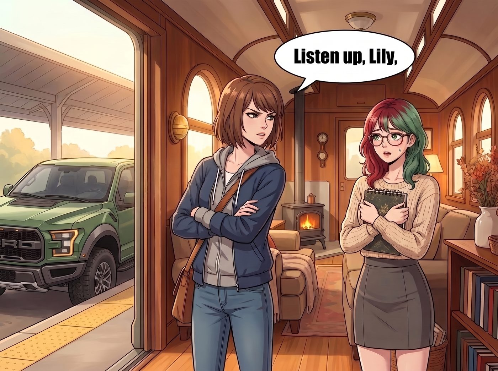

脫網的幻覺

出發前的早晨，二號車廂的氣氛有些劍拔弩張。
Max 站在猛禽皮卡的車門旁，將一張寫著「絕對禁止追蹤（NO TRACKING）」的黃色便利貼狠狠拍在儀表板上。然後，她轉過身，用一種被稱為「死亡視線（Death Stare）」的嚴厲目光，死死盯著前來送行的 Lily。
「聽清楚了，Lily。」Max 雙手抱胸，語氣是前所未有的嚴肅，「這是一場『脫網（Off-the-grid）』的公路旅行。我禁止妳調用任何軍事衛星、禁止妳黑進沿途的交通監視器、禁止妳使用無人機（UAV）在我們頭頂盤旋，更不准妳用什麼 IMSI 捕捉器去定位我們的手機信號！」
Max 深吸了一口氣，下達了最終通牒：「我們要的是自由，不是楚門的世界。如果我發現天上有任何長得像鳥但沒有羽毛的東西，我就把妳的 Excel 表格全刪了。」
Lily 穿著乖巧的針織衫，雙手交疊在身前，面對 Max 的「死亡視線」，她沒有絲毫反抗。
「我向您保證，Max 學姐。」Lily 眨了眨那雙純潔無瑕的眼睛，推了推圓框眼鏡，「在您們旅行期間，我絕對不會使用任何聯邦級別的高科技 ISR（情報、監視與偵察）系統。我對天發誓，絕不調用一顆軍事衛星。」
「最好是這樣。」Max 狐疑地看了她一眼，然後轉身上了車。
伴隨著 V8 引擎的狂野轟鳴，Chloe 狂笑著踩下油門，猛禽皮卡駛出了營地，朝著加州的一號公路絕塵而去。
自由的風，太平洋的海岸線，一萬兩千美元的揮霍計畫。
最初的四十八小時，一切都完美得像一場夢。沒有飛機的噪音，沒有 Victoria 的抱怨，更沒有無處不在的「行政監控」。
直到第三天傍晚。
她們沿著一號公路開到了加州中部，因為玩得太瘋，錯過了原本要訂的民宿，只能把車停在路邊一家閃爍著老舊霓虹燈、看起來有點破敗的汽車旅館前。
「就這家吧，雖然看起來有點像恐怖片裡的殺人客棧。」Chloe 聳了聳肩，攬著 Max 走進了那個充滿霉味的櫃檯。
前台那個正在看報紙的禿頭大叔抬起眼皮，看了她們一眼，又看了一眼窗外那輛猛禽皮卡。
「車牌號碼 WA-77X……是 Price 小姐和 Caulfield 小姐嗎？」
Chloe 愣住了，手裡的車鑰匙差點掉在地上：「你……你怎麼知道我們的名字？我們根本沒預約啊！」
大叔慢吞吞地從抽屜裡拿出兩張燙金的房卡，語氣裡帶著一種見了鬼的敬畏：
「十分鐘前，我們旅館那台快二十年沒人用過的傳真機突然響了。傳過來的是一份格式完美得嚇人的信用卡預授權表，上面有兩位的名字、車牌和預計抵達時間，指定要我們最好的一間海景套房，押金、房費、清潔費、稅，全部算得清清楚楚，連我們櫃檯自己都沒算得這麼細。」
大叔嚥了一口唾沫，指了指旁邊的一個小推車：「那邊是剛送來的四份頂級和牛漢堡和無麩質沙拉，傳真最底下備註了這是『兩位客人抵達時的熱量補充包』，費用一併記在那張卡上。祝兩位住得愉快。」
Chloe 和 Max 呆若木雞地站在原地。
Max 猛地掏出手機，無視了自己定下的「脫網」規矩，直接撥通了二號車廂的電話。
電話一秒鐘就被接起了。
「晚上好，Max 學姐。海景套房的濕度還滿意嗎？」Lily 軟糯的聲音從聽筒裡傳來，甚至還能聽到她那邊有條不紊敲擊鍵盤的聲音。
「Lily！！」Max 抓狂地大喊，「妳發誓過不用衛星和無人機的！妳怎麼知道我們在那家汽車旅館？！」
「我確實沒有使用任何軍事級 ISR 設備，學姐。我嚴格遵守了您的規定。」
Lily 的語氣無辜極了，但接下來的話，卻讓 Max 深刻體會到了什麼叫作《即刻救援（Taken）》裡的 Bryan Mills，只不過 Lily 依靠的不是「殺人的特殊技能」，而是「行政的特殊技能」。
「Max 學姐，在現代消費主義社會，追蹤兩個在公路上揮霍現金的千禧世代，根本不需要動用衛星。只需要一點點……微不足道的民用數據。」
Lily 開始在電話那頭有條不紊地覆盤她們的路線。
第一個座標，來自下午兩點十五分。那時她們停在俄勒岡州邊境的加油站買了兩瓶可樂，Max 付的是現金，但 Chloe 順手刷了那張殼牌加油站會員積分卡。那張卡綁的是營地的帳號，積分一入帳，通知就寄進了 Lily 的信箱。
「Chloe 學姐每次加油都會刷那張卡，」Lily 補充道，「這是肌肉記憶。」
Chloe 下意識地摸了摸牛仔褲的後口袋。卡還在。
第二個座標，來自下午四點的金門大橋。皮卡擋風玻璃上貼著一張小小的 FasTrak 自動收費標籤，而那個帳戶綁的是營地的公務卡。車子穿過收費站的那一瞬間，一筆過橋扣款就連同時間和地點，出現在 Lily 的帳戶紀錄裡。
Max 轉過頭，隔著大堂的玻璃門，看了一眼停在外面的皮卡。那張標籤就貼在後照鏡後面，她從來沒注意過它。
第三個座標，來自傍晚六點。皮卡的右前輪胎壓下降了 0.2 Bar，福特的車載診斷系統（OBD-II）自動把保養提醒推送到了 FordPass 應用程式。而 Chloe 的 FordPass 帳號，當初是她嫌麻煩、丟給 Lily 幫忙註冊的。
「我只需要讀取這條推送到我手機上的維修提醒，」Lily 的聲音平靜得像在唸天氣預報，「再結合您們的平均車速和沿途的地形坡度，就能推算出您們在十五分鐘後，會因為疲勞和輪胎問題，被迫停在這一帶唯一還有空房的汽車旅館：藍燕子（Blue Swallow）。」
電話這頭的 Max 已經聽得頭皮發麻了。
「所以……」Lily 的聲音依然溫柔，「我只是提前十分鐘，用我自己的信用卡給旅館前台發了一份合規的預授權傳真而已，費用回去再從您們的旅費裡扣。這完全是基於您們自己授權給我的帳戶數據進行的『行政預判』。我甚至沒有黑進任何私人系統。」
Chloe 搶過手機，對著話筒崩潰地怒吼：「妳這個披著人皮的大數據演算法！妳比五角大廈的間諜衛星還要可怕！老娘現在就把那張該死的加油站會員卡折斷！」
「這不是間諜行為，Chloe 學姐。這是一個首席財務官對流動資產（您們）進行的常規風險控制。」Lily 在電話那頭乖巧地笑了笑，「和牛漢堡快涼了，請趁熱吃。明天早上八點，我會為您們預定沿途最便宜、但絕對衛生的汽車維修店。晚安。」
電話掛斷了。
Max 和 Chloe 站在這家破敗的汽車旅館大堂裡，看著面前那輛裝滿了昂貴和牛漢堡的小推車，突然覺得一陣深深的無力感。
她們逃過了直升機，逃過了無人機，甚至逃過了天上的軍事衛星。
但她們永遠逃不出一個行政黑魔法師對「美國消費主義基礎設施」的極致掌控。只要她們還在這個國家開車、加油、過收費站，Lily 就能像一個無所不知的幽靈一樣，用最冰冷的發票和數據，精準地往她們手裡塞熱騰騰的漢堡。
「算了……」Chloe 挫敗地嘆了口氣，拿起一個和牛漢堡狠狠咬了一口，「至少……這漢堡確實比路邊攤的起司熱狗好吃。街頭法則第二條：如果妳無法打敗一個黑魔法師，那就心安理得地吃她墊錢買的飯吧。反正最後也是從我們自己的旅費裡扣。」